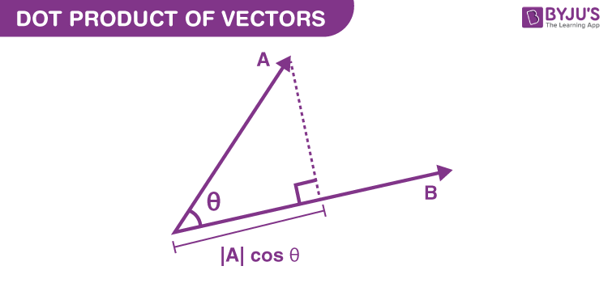
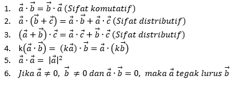
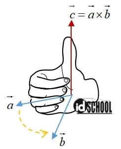
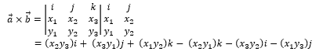
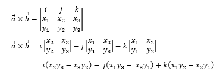
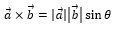

APA ITU PERKALIAN VEKTOR ?
Perkalian vektor adalah operasi perkalian dengan dua operand (objek yang dikalikan) berupa vektor. Tetapi hasil operasi ini tidak selalu adalah vektor. Terdapat tiga macam perkalian vektor, yaitu produk skalar atau perkalian titik (dot product atau scalar product), perkalian silang (cross product)
DOT PRODUCT
Pengertian
Dot Product atau perkalian titik dan bisa disebut juga perkalian skalar adalah ukuran seberapa dekat dua vektor sejajar, berdasarkan arah yang ditunjuknya. Ukurannya adalah bilangan skalar (nilai tunggal) yang dapat digunakan untuk membandingkan dua vektor dan memahami dampak dari reposisi salah satu atau keduanya. Perkalian titik diperoleh dengan melakukan perhitungan matematis pada sifat-sifat vektor
Rumus Dot Product
Jika besar dua vektor dan sudut antara keduanya diketahui, maka mudah untuk menghitung perkalian titik. Perkalian titik direpresentasikan dengan menggunakan titik di antara dua referensi vektor, dalam hal ini a dan b , seperti yang ditunjukkan dalam rumus berikut:
a • b = ax * bx + ay * by
Persamaan lengkap untuk mencari perkalian titik sedikit lebih rumit. Caranya adalah dengan mengalikan besar vektor a dengan besar vektor b , lalu mengalikan hasilnya dengan kosinus (cos) sudut antar vektor, seperti yang ditunjukkan pada persamaan berikut:
a • b = |a| × |b| × cos(θ)
Kalkulator Dot Product
Sifat - Sifat Dot Product
Cross Product
Pengertian
Hasil suatu perkalian silang dua buah vektor adalah juga sebuah vektor. Perkalian silang bersifat tidak komutatif.
Penentuan arah vektor pada perkalian silang dapat menggunakan kaidah tangan kanan yang melibatkan telapak tangan, empat jari, dan jempol/ibu jari. Di mana, telapak tangan menuju arah vektor pertama yang akan dikalikan dan empat jari menuju arah vektor kedua. Kemudian, arah vektor satuan hasil perkalian ditunjukkan oleh ibu jari.
Gambaran arah vektor a, vektor b, serta vektor yang tegak lurus dengan kedua vektor sesuai pada kondisi tiga vektor berikut
Rumus Cross Product
Rumus perhitungan cross product adalah sebagai berikut
Cara 1 :
Cara 2
adapun untuk vector yang diketahui sudutnya menggunakan rumus :
